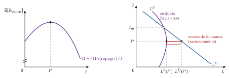
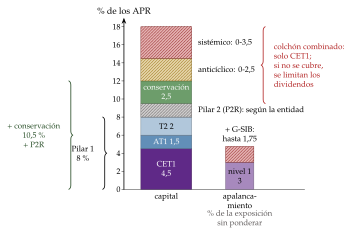
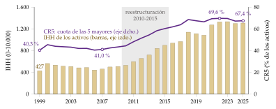
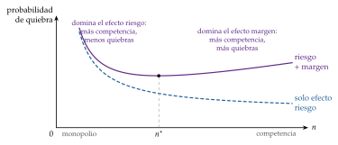

Tema 3.B.27
Regulación financiera bancaria y no-bancaria. Fundamentos teóricos y evidencia empírica.
Por qué y cómo se regula a bancos y no bancos: Stiglitz-Weiss, Diamond-Dybvig, Basilea III, colchones, resolución, MiCA y la evidencia empírica.
Exclusivo Material exclusivo de victorgutierrezmarcos.es y la app Oposición TCEE · DCE. Puedes usarlo libremente para tu estudio personal. No se autoriza su incorporación a otras plataformas, aplicaciones o servicios. Condiciones de uso.
Introducción
Enganche:
«Cada palo que aguante su vela», dice el refrán: que cada uno cargue con las consecuencias de lo que hace. En las finanzas, durante mucho tiempo, no ha sido así.
Cuando estalla una crisis bancaria en un país de renta alta, el Estado pone de mediana un 6,7 % del PIB en ayudas directas a los bancos. Las pérdidas de quien asumió el riesgo acaban en el bolsillo del contribuyente.
En marzo de 2023, Credit Suisse, uno de los bancos de importancia sistémica mundial, perdió la confianza de sus clientes y fue absorbido por UBS con apoyo público. Pero esta vez los inversores en sus bonos convertibles contingentes perdieron unos 16.000 millones de francos: una parte de la vela la aguantaron quienes cobraban por asumir ese riesgo.
Entre las 2 imágenes está la pregunta de esta exposición: ¿por qué las finanzas son el sector más regulado de la economía, cómo se regula a los bancos y a quienes, sin serlo, hacen lo mismo que ellos, y sirve de algo?
Relevancia:
Es el sector más regulado: en cualquier economía desarrollada, una entidad financiera necesita una licencia, un capital y una liquidez mínimos, supervisión continua y un régimen de quiebra propio. Los incentivos de sus gestores dependen tanto de la regulación como del mercado, y el debate no es si regular, sino cómo: la calidad de la regulación importa más que su cantidad.
Es cara cuando falla: entre 1970 y 2025 empezaron en el mundo 164 crisis bancarias sistémicas, y en los países de renta alta cada una costó de mediana un 32 % del PIB en producción perdida.
Está cambiando ahora: la Unión Europea aplica desde el 1 de enero de 2025 la versión final de Basilea III, y a finales de 2024 los intermediarios financieros no bancarios ya tenían el 51 % de los activos financieros del mundo, frente al 38 % de los bancos.
Tiene su Premio Nobel: Ben Bernanke, Douglas Diamond y Philip Dybvig lo recibieron en 2022 por explicar por qué existen los bancos, por qué son frágiles y por qué su quiebra daña a toda la economía.1
Contextualización:
Las definiciones de partida:
la regulación financiera es el conjunto de normas con que las autoridades ordenan la actividad de las entidades y de los mercados financieros para alcanzar objetivos públicos;
la supervisión financiera es el seguimiento de la situación y de la conducta de las entidades, con peticiones de información e inspecciones de las que pueden salir medidas correctoras y sanciones;
la intermediación financiera no bancaria (non-bank financial intermediation, NBFI) es la que hacen los fondos de inversión, las aseguradoras, los fondos de pensiones, los vehículos de titulización y otros intermediarios que no captan depósitos; la parte que transforma plazos o se apalanca como un banco se llamó banca en la sombra (shadow banking);
el riesgo sistémico es el riesgo de que la quiebra de una entidad, o una perturbación común a muchas, interrumpa el funcionamiento del sistema financiero y dañe a la economía real.
La perspectiva histórica: la regulación avanza a golpe de crisis.
Los años 30: tras la Gran Depresión, Estados Unidos aprobó en 1933 la Ley Glass-Steagall, que creó la garantía federal de depósitos (FDIC) y separó la banca comercial de la de inversión; en 1934 nació la Comisión de Valores (SEC) y la Reserva Federal fijó topes a los tipos de los depósitos (la Regulation Q).2 Las quiebras bancarias casi desaparecieron durante 4 décadas, con un sistema muy intervenido.
De los 70 a los 90: la liberalización y la integración financiera llevaron la regulación al plano internacional: el Comité de Supervisión Bancaria de Basilea nació en 1974 y su primer acuerdo de capital es de 1988.
La crisis de 2007-2009: la respuesta fue, por primera vez, global. El G-20 creó en 2009 el Consejo de Estabilidad Financiera (FSB) y encargó Basilea III; Estados Unidos aprobó la Ley Dodd-Frank en 2010, y la Unión Europea, el Sistema Europeo de Supervisión Financiera en 2011 y la unión bancaria desde 2014.
Los años 20 de este siglo: la covid-19, la caída de Silicon Valley Bank y de Credit Suisse en 2023, el peso creciente de la intermediación no bancaria y los criptoactivos abren una nueva etapa.
Problemática:
¿Por qué hay que regular las finanzas más que cualquier otro sector?
¿Qué se regula, con qué instrumentos y quién lo hace, dentro y fuera de los bancos?
¿Qué límites tiene la regulación, y puede empeorar lo que quiere arreglar?
¿Qué dice la evidencia: ha hecho la regulación más estable y más eficiente al sistema financiero?
Estructura:
La exposición sigue el título: primero por qué se regula, después cómo se regula y, al final, qué dicen los datos.
I. Fundamentos teóricos de la regulación financiera (I): qué es la regulación financiera, los fallos de mercado que la justifican, con los modelos de Stiglitz y Weiss (1981) y de Diamond y Dybvig (1983), y los fallos del propio regulador.
II. Instrumentos de regulación bancaria y no bancaria (II): quién regula, Basilea III y su aplicación en la Unión Europea, la política macroprudencial, la supervisión, la resolución de bancos y la regulación de los intermediarios no bancarios.
III. Evidencia empírica (III): la importancia del sistema financiero para el crecimiento, los efectos de la regulación bancaria, la competencia y la gobernanza de las entidades.
3.B.27. Regulación financiera bancaria y no bancaria. Fundamentos teóricos y evidencia empírica
Introducción2′30″
I. Fundamentos teóricos de la regulación financiera10′
1. ¿Qué es la regulación financiera?
2. Justificación de la intervención en el sector financiero
II. Instrumentos de regulación bancaria y no bancaria10′
1. Marco institucional
2. Implementación de la regulación financiera
3. Regulación financiera no bancaria
III. Evidencia empírica6′30″
1. Sistema financiero, crecimiento y desigualdad
2. Regulación bancaria, desarrollo y estabilidad
3. Política de la competencia
4. Capital humano de las cajas
Conclusión1′
Reparto del cante: introducción, 2′30″; I, 10′ (I.1, 1′30″; I.2, 8′30″: fallos de mercado, 2′30″; Stiglitz y Weiss, 2′; Diamond y Dybvig, 2′30″; fallo de regulación, 1′30″); II, 10′ (II.1, 2′; II.2, 6′; II.3, 2′); III, 6′30″ (III.1, 1′30″; III.2, 2′30″; III.3, 1′30″; III.4, 1′), y conclusión, 1′. Los 2 modelos son resúmenes: su desarrollo completo está en otros temas [ver tema 3.A.13] [ver tema 3.B.26]. Los gráficos imprescindibles son el racionamiento del crédito, el de Diamond y Dybvig, los requisitos de capital y la brecha crédito-PIB; las funciones clave, el rendimiento esperado del banco, la condición del contrato óptimo de depósito, la ratio de capital y las 2 ratios de liquidez. Lo que va en cajas grises, en notas y en los anexos es para las preguntas del tribunal.
Notación y siglas. APR: activos ponderados por riesgo; CET1 (common equity tier 1): capital ordinario de nivel 1 (acciones y reservas); AT1: capital adicional de nivel 1; T2: capital de nivel 2. LCR y NSFR: las ratios de cobertura de liquidez y de financiación estable neta. En Stiglitz y Weiss, \(\hat r\) es el tipo del préstamo; en Diamond y Dybvig, \(\pi\) es la fracción de depositantes impacientes, \(R\) el rendimiento de la inversión a largo plazo, \(L\) su valor si se liquida antes y \(c_1\), \(c_2\) los consumos en \(T=1\) y \(T=2\), como en el resto del temario. Instituciones: BCBS (Comité de Supervisión Bancaria de Basilea), FSB (Consejo de Estabilidad Financiera), ABE, AEVM y AESPJ (autoridades europeas bancaria, de valores y de seguros y pensiones), JERS (Junta Europea de Riesgo Sistémico), MUS y MUR (mecanismos únicos de supervisión y de resolución), JUR y FUR (Junta y Fondo Únicos de Resolución), FGD (Fondo de Garantía de Depósitos), FROB (Fondo de Reestructuración Ordenada Bancaria), AMCESFI (Autoridad Macroprudencial Consejo de Estabilidad Financiera). Normas: CRR y CRD (reglamento y directiva de requisitos de capital), BRRD (directiva de reestructuración y resolución bancarias), DGSD (directiva de garantía de depósitos).
Para saber más
Jakob de Haan, Sander Oosterloo y Dirk Schoenmaker, Financial Markets and Institutions: A European Perspective: el manual de referencia para este tema, con la teoría de la regulación y el marco europeo.
Anat Admati y Martin Hellwig, The Bankers’ New Clothes: por qué los bancos deberían tener mucho más capital.
Carmen Reinhart y Kenneth Rogoff, Esta vez es distinto: ocho siglos de crisis financieras, y la creencia que se repite antes de cada una.
Judith Arnal, «Estabilidad financiera y estabilidad de precios: dos caras de la misma moneda», y, con Jorge Muñoz y María Eugenia Menéndez-Morán, «Quo vadis, Bitcoin?», en el Real Instituto Elcano; y, en Economipedia, «La economía no necesita regulación, necesita regulación eficiente».
I. Fundamentos teóricos de la regulación financiera
Empezamos por la pregunta de fondo: por qué intervenir en el sistema financiero.
Conclusión anticipada: la regulación financiera se justifica porque los mercados financieros fallan más que otros y con consecuencias más graves. La información es asimétrica, la quiebra de una entidad daña a terceros y los bancos son frágiles por naturaleza. Pero el regulador también falla, y por eso la mejor regulación no es la más extensa, sino la que corrige los incentivos.
I.1. ¿Qué es la regulación financiera?
El sistema financiero y sus funciones
Para qué sirve: el sistema financiero canaliza el ahorro hacia la inversión, y para ello cumple 4 funciones [ver tema 3.B.23]:
transforma plazos: los bancos se financian a corto plazo, con depósitos, y prestan a largo. Así concilian el deseo de los ahorradores de tener su dinero disponible con el de los inversores de financiarse a largo plazo; ese desajuste de plazos (maturity mismatch) es su servicio y su punto débil;
transfiere y reparte riesgos: el riesgo de las inversiones pasa de los ahorradores a los intermediarios y a los agentes que lo toleran mejor, a cambio de un diferencial de tipos;
produce información y vigila a los prestatarios: estudiar la solvencia de un prestatario es caro, y un banco lo hace por cuenta de muchos ahorradores;
gestiona los pagos: los bancos y otras entidades permiten transferir poder de compra entre partes alejadas y aseguran que la transferencia se cumpla.
Regulación y supervisión: 3 objetivos
2 actividades que suelen ir juntas: la regulación fija las normas y la supervisión vigila su cumplimiento. Como suele hacerlas la misma autoridad, a menudo se llama regulación financiera a las 2.3
Los objetivos: la regulación financiera persigue 3, 2 microeconómicos y uno macroeconómico :
la solvencia de cada entidad: que pueda pagar a sus acreedores (depositantes, tenedores de deuda, asegurados, partícipes de fondos). Es la regulación microprudencial, y su instrumento principal son los requisitos de capital;
la protección del cliente: que la entidad le informe y le trate con lealtad. Son las normas de conducta;4
la estabilidad del sistema financiero en su conjunto: que no se acumulen riesgos que puedan dañar a la economía. Es la regulación macroprudencial, que mira a todas las entidades y mercados a la vez y a su relación con el ciclo económico.5
Un cuarto objetivo, compartido con el resto de la economía: la competencia, que vigilan las autoridades de defensa de la competencia (apartado III.3).
| Objetivo | Fallo que corrige | Instrumentos | En España |
|---|---|---|---|
| Microprudencial | información asimétrica con los depositantes; riesgo moral | capital, liquidez, grandes exposiciones, gobierno interno, supervisión | Banco de España (dentro del MUS), CNMV, DGSFP |
| Conducta | información asimétrica con el cliente | información obligatoria, idoneidad de los productos, educación financiera | Banco de España, CNMV, DGSFP |
| Macroprudencial | externalidades, prociclicidad, pánicos | colchones de capital, límites a los préstamos, red de seguridad | AMCESFI; Banco de España, CNMV y DGSFP |
| Competencia | poder de mercado | control de concentraciones y de conductas | CNMC |
Fuente: elaboración propia a partir de De Haan, Oosterloo y Schoenmaker (2012) y Gobierno de España (2019).
Cómo se organiza la supervisión: 3 modelos
Los modelos: según cómo se repartan los objetivos entre autoridades, hay 3:
el modelo sectorial: un supervisor para cada tipo de entidad (bancos, valores, seguros), que vigila a la vez su solvencia y su conducta. Es el tradicional y el de España: el Banco de España para las entidades de crédito, la Comisión Nacional del Mercado de Valores (CNMV) para los valores y la Dirección General de Seguros y Fondos de Pensiones (DGSFP), del Ministerio de Economía, Comercio y Empresa, para los seguros y los fondos de pensiones;
el modelo funcional o de picos gemelos (twin peaks): un supervisor para la solvencia y otro para la conducta, sea cual sea la entidad. Es el del Reino Unido desde 2013, con la Autoridad de Regulación Prudencial dentro del Banco de Inglaterra y la Autoridad de Conducta Financiera, y el de los Países Bajos;
el modelo integrado: un único supervisor para todo, fuera del banco central (supervisor único estricto) o dentro de él.
Cuál elegir: depende de las sinergias y de los conflictos de intereses entre objetivos. Separar la solvencia de la conducta evita que el supervisor tolere malas prácticas con los clientes para no dañar la cuenta de resultados del banco, pero obliga a coordinarse.
I.2. Justificación de la intervención en el sector financiero
Una vez visto qué es la regulación, pasamos a por qué hace falta.
El marco general: Musgrave (1959) justifica la intervención del Estado por 3 motivos, eficiencia (corregir fallos de mercado), equidad (reducir desigualdades) y estabilidad (suavizar el ciclo), y los 3 están en el sistema financiero [ver tema 3.A.23].
El debate: la visión pigouviana parte de que los fallos de mercado son inevitables y de que el Estado puede y debe corregirlos; la contraria sostiene que esos fallos son menores de lo que parecen o que el Estado, que también falla, no los arregla. Por eso este apartado recorre primero los fallos de mercado (I.2.1), desarrolla los 2 modelos que fundamentan la regulación bancaria (I.2.2 y I.2.3) y acaba con los fallos del regulador (I.2.4).
I.2.1. Condición necesaria: los fallos de mercado
Motivo eficiencia
La información asimétrica: en las finanzas, una parte sabe casi siempre más que la otra, antes del contrato (selección adversa) o después (riesgo moral) [ver tema 3.A.13]. Aparece en 5 frentes:
En el crédito: el banco no sabe cómo de arriesgado es el proyecto del prestatario ni qué hará con el dinero, y puede preferir racionar el crédito a subir el tipo (apartado I.2.2).
Entre el banco y sus depositantes: el depositante no puede vigilar al banco. Sus depósitos son pequeños, vigilar es caro y nadie quiere pagar por una vigilancia que aprovechan todos. La hipótesis de representación sostiene que el supervisor vigila por cuenta de los depositantes y hace lo que harían ellos si pudieran: exigir capital e intervenir cuando el capital se agota .6 Es el fundamento de la regulación microprudencial.
En la venta de productos financieros: la entidad sabe más que el cliente sobre lo que vende. El problema es común a todos los servicios profesionales, pero aquí es más grave por la naturaleza fiduciaria del negocio (se paga hoy y el resultado se ve años después, como en un plan de pensiones) y por las cuantías en juego. La respuesta son las normas de conducta: información clara sobre costes y riesgos, productos adecuados al perfil del cliente y distinción entre clientes minoristas y profesionales (en la Unión Europea, la Directiva sobre los mercados de instrumentos financieros, MiFID II) y la educación financiera [ver tema 4.A.20].
Sobre la salud de las entidades y de los emisores: el inversor no sabe si una entidad es solvente ni si las cuentas de un emisor son ciertas. Por eso hay licencias para operar, que exigen un plan de negocio, controles internos y gestores idóneos, y obligaciones de información: cuentas auditadas, folletos de emisión y comunicación de las participaciones significativas [ver tema 3.B.1]. El falseamiento de las cuentas de Gowex, que la CNMV suspendió de cotización en 2014, muestra por qué hacen falta.
En las entidades demasiado grandes para caer (too big to fail): una entidad cuya quiebra dañaría a todo el sistema sabe que el Estado la rescatará, y sus acreedores también. Le prestan barato, se endeuda más y arriesga más: es riesgo moral. El FSB las llama bancos de importancia sistémica mundial (G-SIB): en la lista de 2025 hay 29, entre ellos el Banco Santander. Las respuestas son 3: más capital (los colchones sistémicos), resoluciones en las que pierdan accionistas y acreedores (apartado II.2.4) y límites al tamaño o a las actividades.
Las externalidades: la quiebra de una entidad cuesta a la sociedad más que a sus dueños, y la entidad no lo tiene en cuenta al decidir cuánto arriesgar.
El contagio: la quiebra arrastra a otras entidades sanas por las exposiciones directas entre ellas (efecto dominó) o por la información (los depositantes de otros bancos parecidos retiran sus fondos: efecto rebaño).
Las ventas forzosas: quien tiene que vender activos para pagar baja su precio y daña el balance de todos los que los tienen. Cada uno se endeuda sin tener en cuenta ese efecto sobre los demás, una externalidad pecuniaria que lleva a un endeudamiento excesivo en los auges.
La destrucción de información: con el banco desaparece lo que sabía de sus clientes, y el crédito se encarece para todos.
El coste fiscal: si el Estado rescata, paga el contribuyente.
Las respuestas: requisitos de capital, supervisión y fondos de garantía y de resolución pagados por el propio sector, para que internalice el coste.
Externalidades de red en los pagos: un sistema de pagos vale más cuantos más participantes tiene. Por eso puede tener sentido regular sus precios, algo que en otros mercados suele ser mala idea: la Unión Europea obliga a que una transferencia inmediata no cueste más que una ordinaria, para que se generalicen.
El poder de mercado: las economías de escala en la información y en la reputación, las de red en los pagos y las propias barreras regulatorias concentran el sector. Un banco con poder de mercado fija tipos de los préstamos más altos y de los depósitos más bajos, como en el modelo de Cournot aplicado a la banca [ver tema 3.A.19]. Lo corrige la defensa de la competencia [ver tema 3.B.39] [ver tema 4.A.15], con un matiz: la relación entre competencia y estabilidad no es sencilla (apartado III.3).
El bien público global: la estabilidad financiera es un bien público, porque nadie puede quedar excluido de ella y su disfrute por uno no reduce el de los demás, y con la libre circulación de capitales es global: la crisis de las hipotecas subprime de Estados Unidos llegó a los bancos europeos en semanas. Por eso la regulación se coordina en el G-20 y en el FSB (apartado II.1).
Motivo equidad
La inclusión financiera: sin una cuenta y un medio de pago no se puede cobrar un salario ni pagar un recibo. Por eso la Unión Europea reconoce el derecho a una cuenta de pago básica, y España la hace gratuita para las personas vulnerables.
El acceso al crédito: el racionamiento del crédito castiga a quien no tiene garantías ni historial, como las pymes, los jóvenes o los emprendedores, y justifica los avales y la banca pública, como el Instituto de Crédito Oficial (apartado I.2.2).
Motivo estabilidad
La prociclicidad: el crédito crece demasiado en los auges y se corta en las recesiones, y el sistema financiero amplifica el ciclo. En la expansión suben los precios de los activos y de las garantías, los bancos ganan dinero y su capital crece, y prestan más; en la recesión, todo se invierte y el crédito se contrae justo cuando más falta hace [ver tema 3.A.42]. Hasta la propia regulación puede amplificarlo: un requisito de capital que depende del riesgo medido sube en las recesiones, cuando el riesgo parece mayor.
La fragilidad de los bancos: la transformación de plazos hace a los bancos vulnerables a pánicos que se cumplen solos (apartado I.2.3).
La respuesta: la política macroprudencial, con 2 dimensiones:
la temporal: frenar la acumulación de riesgos en los auges y liberar capital en las recesiones (apartado II.2.2);
la transversal: vigilar las conexiones entre entidades y exigir más a las sistémicas.
I.2.2. Información asimétrica en el crédito: racionamiento (Stiglitz y Weiss, 1981)
a) Idea
¿Por qué un mercado de crédito puede quedar en equilibrio con exceso de demanda, sin que el tipo de interés suba para vaciarlo? Stiglitz y Weiss (1981) responden que el tipo de interés hace 2 papeles: es el precio del préstamo y, a la vez, decide quién pide prestado y qué hace con el dinero.7
Es la versión financiera del mercado de cacharros de George Akerlof (1970): la información asimétrica destruye transacciones que convienen a las 2 partes [ver tema 3.A.13].
b) Modelo
i) Supuestos
Cada prestatario pide un préstamo de la misma cuantía para un proyecto.
Los proyectos tienen el mismo rendimiento medio y distinto riesgo.
Hay responsabilidad limitada: si el proyecto fracasa, el prestatario no devuelve y solo pierde su garantía; si sale bien, devuelve \(1+\hat r\) por unidad prestada.
El banco no observa el riesgo de cada proyecto (selección adversa) ni el proyecto que se elige después (riesgo moral), y solo fija el tipo \(\hat r\).
ii) Desarrollo
Por qué al prestatario le gusta el riesgo: se queda con todo lo que el proyecto rinda por encima de la deuda y, si fracasa, solo pierde la garantía. El banco, en cambio, cobra como mucho la deuda.
Los 3 efectos de subir el tipo:
el directo: cobra más a los que pagan;
el de selección adversa: los prestatarios con proyectos más seguros dejan de pedir;
el de incentivos: los que quedan eligen proyectos más arriesgados.
El resultado: los 2 últimos efectos reducen la probabilidad de cobrar, y el rendimiento esperado del banco deja de crecer con el tipo a partir de un tipo \(\hat r^*\):
\[\mathbb{E}[B_{\mathrm{banco}}]=(1+\hat r)\cdot\Pr(\text{repago}\mid\hat r),\qquad \frac{\partial\Pr(\text{repago}\mid\hat r)}{\partial\hat r}<0\tag{1}\]
El racionamiento: el banco no presta por encima de \(\hat r^*\), y la oferta de crédito se dobla hacia atrás desde ese tipo. Si a \(\hat r^*\) la demanda supera a la oferta, hay racionamiento del crédito en equilibrio: solicitantes iguales en apariencia reciben el préstamo o no, y el tipo que vaciaría el mercado no es un equilibrio (gráfico 1). Es el mismo gráfico con el que se desarrolla el modelo completo [ver tema 3.A.13].

iii) Implicaciones
Ineficiencia: proyectos rentables se quedan sin financiar, sobre todo los de las pymes y los nuevos, y el crecimiento se resiente.
Las soluciones privadas revelan información:
las garantías y el historial de crédito, que separan a los prestatarios, aunque dejan fuera a quien no tiene ni lo uno ni lo otro;
la relación a largo plazo entre el banco y el cliente.
Las soluciones públicas:
infraestructuras de información, como la Central de Información de Riesgos del Banco de España, que da a los bancos el endeudamiento de cada cliente;
avales públicos y banca pública, como las líneas del Instituto de Crédito Oficial, que comparten el riesgo con los bancos o prestan donde el mercado no llega;
límites al riesgo moral, como el del préstamo en relación con el valor de la garantía (loan to value, LTV) en las hipotecas (apartado II.2.2).
La política monetaria tiene efectos reales por el crédito: si el banco central da más fondos a los bancos, la oferta de crédito se desplaza a la derecha y el racionamiento se reduce, como buscaban las operaciones de financiación a plazo más largo con objetivo específico del BCE desde 2014 [ver tema 3.A.37].
La dación en pago y el reparto del riesgo. La exigencia de garantías amplias se ha usado para defender que la entrega de la vivienda no cancele la deuda hipotecaria (la dación en pago), porque cancelarla reduciría los incentivos a pagar y encarecería el crédito. En España la Ley Hipotecaria permite pactarla, pero en la práctica el deudor responde con todo su patrimonio. A favor de la dación hay un argumento de reparto eficiente del riesgo: el hogar es más averso al riesgo que el banco, y en una crisis cargar todas las pérdidas sobre el deudor no es eficiente; por eso casi todos los países desarrollados limitan de algún modo su responsabilidad.
c) Extensiones
Menús de tipo y garantía: si el banco ofrece contratos con distintas combinaciones de tipo y garantía, cada prestatario elige el suyo y revela su riesgo, y el racionamiento puede desaparecer.
Demasiado crédito: si los proyectos difieren en el rendimiento medio y no en el riesgo, el resultado se invierte y se presta demasiado.
Los microcréditos: prestar a grupos cuyos miembros responden unos por otros aprovecha lo que saben los vecinos y la vigilancia entre ellos [ver tema 3.B.28].
d) Evidencia empírica
El racionamiento puro, con solicitantes iguales rechazados, es difícil de observar y parece escaso; lo que sí se observa es que las restricciones de crédito son mayores para las empresas pequeñas y opacas.
Con las solicitudes de préstamo de la Central de Información de Riesgos, en España los bancos con menos capital o liquidez rechazaron más solicitudes cuando la política monetaria se endureció o la economía empeoró.
e) Valoración
Explica un precio que no vacía el mercado sin que nadie quiera cambiarlo, y por qué el crédito reacciona más que el tipo de interés en las crisis.
Depende de un contrato de deuda con responsabilidad limitada y de un banco que solo fija el tipo. Justifica que el regulador mejore la información, pero no dice cuánto capital debe tener un banco ni por qué los bancos pueden caer de golpe: eso lo explica el modelo siguiente.
I.2.3. Estabilidad: pánicos bancarios (Diamond y Dybvig, 1983)
a) Idea
¿Por qué existen los bancos y por qué pueden caer aunque estén sanos? Diamond y Dybvig (1983) responden con un solo modelo: el depósito es un seguro de liquidez que mejora el reparto del riesgo, y ese mismo seguro abre la puerta a un segundo equilibrio, el pánico [ver tema 3.A.10].
Para la regulación es el modelo central: justifica la red de seguridad (la garantía de depósitos y el prestamista de última instancia) y, por el riesgo moral que esta crea, los requisitos de capital y la supervisión. Su desarrollo completo está en el tema de crisis financieras [ver tema 3.B.26].
b) Modelo
i) Supuestos
Hay 3 periodos (\(T=0,1,2\)) y un continuo de depositantes idénticos, cada uno con una dotación de 1 en \(T=0\).
En \(T=1\), cada depositante descubre su tipo: con probabilidad \(\pi\) es impaciente (solo valora consumir en \(T=1\)) y con probabilidad \(1-\pi\), paciente (puede esperar a \(T=2\)). El tipo es información privada y no hay incertidumbre agregada: una fracción \(\pi\) será impaciente.
Hay 2 tecnologías: guardar, que rinde 1, y una inversión ilíquida, que rinde \(R>1\) en \(T=2\), pero solo \(L\leq1\) si se liquida en \(T=1\).
Cada depositante maximiza \(\pi\,u(c_1)+(1-\pi)\,u(c_2)\), con \(u\) cóncava y una aversión relativa al riesgo mayor que 1.
ii) Desarrollo
Sin banco: en autarquía, cada uno elige entre guardar, con \((c_1,c_2)=(1,1)\), e invertir, con \((L,R)\); con un mercado en \(T=1\), todos invierten y obtienen \((1,R)\), el punto \(M\), sin seguro: el impaciente sigue consumiendo 1.
El óptimo: un planificador repartiría el riesgo de ser impaciente; lo que se paga en \(T=1\) se guarda y lo que se paga en \(T=2\) se invierte: \[\begin{array}{rl}\displaystyle \max_{c_1,\,c_2} & \displaystyle \pi\,u(c_1)+(1-\pi)\,u(c_2) \\ \text{s.a.} & \pi\,c_1+\dfrac{(1-\pi)\,c_2}{R}=1\end{array}\] y la condición de primer orden es el resultado clave del modelo:
\[u'(c_1^*)=R\,u'(c_2^*),\qquad 1<c_1^*<c_2^*<R\tag{2}\]
El banco lo alcanza: un depósito que paga \(c_1^*\) a quien retira en \(T=1\) y \(c_2^*\) a quien espera reproduce el óptimo sin conocer los tipos, porque ningún paciente gana haciéndose pasar por impaciente (\(c_2^*>c_1^*\)). Es el punto \(O\) del gráfico 2, el mismo con el que se desarrolla el modelo completo [ver tema 3.B.26].
Pero hay 2 equilibrios de Nash:
en el bueno, solo retiran los impacientes y se alcanza el óptimo;
en el de pánico, cada paciente cree que los demás van a retirar. El banco, que atiende por orden de llegada, tendría que liquidar la inversión, y sus recursos en \(T=1\), \(\pi c_1^*+L\,(1-\pi c_1^*)\), no llegan para pagar \(c_1^*\) a todos: a quien espere no le quedará nada, así que retirar es su mejor respuesta. Con los números del gráfico, solo cobra un 71 % de los depositantes.
La ordenación del bienestar: con la aversión relativa mayor que 1, el pánico es peor incluso que la autarquía: \[\tag{3} U^{\text{pánico}}<U^{\text{autarquía}}<U^{\text{mercado}}<U^{\text{óptimo}}=U^{\text{banco, equilibrio bueno}}.\]

iii) Implicaciones
La fragilidad es la otra cara del servicio: un banco solvente puede caer solo porque sus depositantes temen que caiga. El pánico es una profecía que se cumple sola, un equilibrio de «manchas solares» (sunspots): cualquier señal que coordine las expectativas puede desatarlo.
La red de seguridad elimina el equilibrio malo:
la suspensión de la convertibilidad: si el banco deja de pagar cuando ha retirado sus depósitos una fracción \(\pi\), ningún paciente teme quedarse sin nada; pero falla si \(\pi\) es incierta y es costosa para quien de verdad necesita su dinero, como en el «corralito» griego de 2015;
la garantía de depósitos: si es creíble, ningún paciente tiene motivo para retirar y no hay que usarla nunca: en la Unión Europea cubre 100.000 euros por depositante y entidad, y en Estados Unidos 250.000 dólares;
el prestamista de última instancia: según la regla de Walter Bagehot (1873), en un pánico el banco central debe prestar sin límite a los bancos solventes, contra buenas garantías y a un tipo de penalización.
Pero la red crea riesgo moral, y de ahí sale la regulación prudencial:
con depósitos garantizados, los depositantes dejan de vigilar, y la garantía equivale a una opción de venta que el Estado regala a los accionistas del banco, cuyo valor sube con el riesgo de los activos;8
con responsabilidad limitada y una garantía con prima fija, el banco gana arriesgando más: la garantía exige limitar ese riesgo con requisitos de capital;
el capital es la solución: si los accionistas tienen mucho en juego (skin in the game), cargan con las pérdidas y pierden el incentivo a arriesgar a costa del garante. «Cada palo que aguante su vela»: es la idea que ordena toda la regulación bancaria.
c) Extensiones
Pánicos por los fundamentos: si el rendimiento de la inversión es incierto, los depositantes retiran cuando esperan pérdidas, y los pánicos llegan en las recesiones.
Un solo equilibrio: si cada depositante observa el estado de la economía con un pequeño error, queda un umbral por debajo del cual todos retiran; la probabilidad del pánico sube con lo que promete el banco en \(T=1\).
Fuera de los bancos: cualquier intermediario que se financie a corto plazo y tenga activos ilíquidos puede sufrir un pánico: los fondos del mercado monetario, los vehículos de titulización o, hoy, las monedas estables (stablecoins). Por eso la regulación de la intermediación no bancaria vuelve a este modelo (apartado II.3).
d) Evidencia empírica
Entre 1930 y 1933, oleadas de pánicos cerraron miles de bancos en Estados Unidos sin que la Reserva Federal actuara como prestamista de última instancia; la garantía federal de 1933 acabó con ellos.
Los pánicos son cada vez más rápidos: Northern Rock en 2007, con colas ante sus oficinas, y Silicon Valley Bank en 2023, que perdió más de 40.000 millones de dólares de depósitos en un solo día, a golpe de clic; el 94 % de sus depósitos no estaba garantizado.
El riesgo moral también se ve: en 61 países entre 1980 y 1997, la garantía explícita hizo más probables las crisis bancarias, sobre todo donde la supervisión era débil (apartado III.2).
e) Valoración
A favor: explica con un solo mecanismo por qué existen los bancos, por qué son frágiles y por qué la red de seguridad y la regulación prudencial van juntas.
En contra: el pánico es aleatorio, cuando en la historia llega en las recesiones y a los bancos débiles, y el modelo no dice con qué probabilidad ocurre; sus extensiones lo corrigen.
Con estos 2 modelos sabemos por qué regular. Falta preguntarse si el regulador lo hará bien.
I.2.4. Límite a la intervención: el fallo de regulación
Definición: hay un fallo de regulación cuando la intervención pública deja una asignación peor que la que habría sin ella. Los fallos del Estado hay que compararlos con los del mercado [ver tema 3.A.23].
Sus fuentes en las finanzas:
la captura: el regulador acaba sirviendo a la industria que regula, por la información que ella tiene, por la presión de los grupos organizados o por la expectativa de un empleo futuro en ella [ver tema 3.A.20];9
el arbitraje regulatorio: la actividad se va donde la regulación es más laxa. Los bancos crearon antes de 2007 vehículos fuera de balance para conservar el riesgo sin tener que cubrirlo con capital, y cuanto más se exige a los bancos, más crece la intermediación no bancaria. Es un caso del llamado efecto cobra: una norma bien intencionada crea incentivos que agravan el problema;10
la complejidad: nadie puede prever todos los riesgos de un sistema tan complejo, y las normas detalladas tienen costes de eficiencia y de cumplimiento;
el riesgo moral de la propia red de seguridad (apartado I.2.3).
El abanico de posiciones, de menos a más intervención:
la escuela austriaca: la reserva fraccionaria es el origen de la inestabilidad. La Ley de Peel de 1844 exigió cubrir con oro los billetes, pero no los depósitos, y así abrió la puerta a que los bancos creen crédito sin ahorro previo y alimenten los ciclos. De ahí 2 propuestas: un coeficiente de caja del 100 % sobre los depósitos a la vista o la banca libre, en la que bancos sin banco central ni red de seguridad compiten emitiendo su propio dinero y la competencia los disciplina;11
la intervención mínima: Benston y Kaufman (1996) limitan la regulación a unos mínimos de capital que hagan frente a las externalidades, y confían el resto a la disciplina del mercado;
la intervención extensa: la que existe hoy, con capital, liquidez, supervisión, macroprudencial y resolución (apartado II);
la banca pública: la propiedad estatal de los bancos, cuyos resultados recoge la evidencia (apartado III.2).
Recapitulación: el crédito sufre de información asimétrica, los bancos son frágiles por naturaleza y la quiebra de una entidad daña a terceros; la red de seguridad evita los pánicos, pero crea riesgo moral que hay que compensar con capital y supervisión. Y el regulador también falla. Con esos fundamentos, pasamos a los instrumentos.
II. Instrumentos de regulación bancaria y no bancaria
Una vez visto por qué regular, pasamos a cómo se hace: quién regula y con qué instrumentos.
Conclusión anticipada: tras 2008, la regulación pasó de mirar a cada entidad a mirar también al sistema. Exige más capital y de más calidad, liquidez, colchones macroprudenciales y un régimen de resolución en el que pierdan los accionistas y los acreedores antes que el contribuyente. El reto de hoy es que lo que hace lo mismo que un banco, fuera de los bancos, tenga una regulación equivalente.
II.1. Marco institucional
En el mundo: las normas internacionales no obligan por sí mismas; las fijan foros de cooperación y cada jurisdicción las incorpora a su derecho.
El G-20 da el impulso político: desde 2008 se reúne a nivel de jefes de Estado y de Gobierno, y en la cumbre de Londres de abril de 2009 creó el Consejo de Estabilidad Financiera.
El Consejo de Estabilidad Financiera (Financial Stability Board, FSB), sucesor desde 2009 del Foro de Estabilidad Financiera de 1999, coordina a las autoridades financieras nacionales, a los organismos internacionales y a los que fijan las normas de cada sector; España es miembro y lo preside Andrew Bailey desde julio de 2025. Su agenda: acabar con las entidades demasiado grandes para caer, hacer más seguros los mercados de derivados, vigilar la intermediación no bancaria y los criptoactivos.
Los que fijan las normas de cada sector: el Comité de Supervisión Bancaria de Basilea (BCBS, 1974), en el Banco de Pagos Internacionales; la Organización Internacional de Comisiones de Valores (IOSCO), la Asociación Internacional de Supervisores de Seguros (IAIS), el Comité de Pagos e Infraestructuras de Mercado (CPMI) y la Asociación Internacional de Aseguradores de Depósitos.
En la Unión Europea, 2 bloques:
el Sistema Europeo de Supervisión Financiera (2011), con un pilar microprudencial, las 3 autoridades europeas de supervisión (la Autoridad Bancaria Europea, ABE; la de Valores y Mercados, AEVM, y la de Seguros y Pensiones de Jubilación, AESPJ), su Comité Mixto y las autoridades nacionales, y un pilar macroprudencial, la Junta Europea de Riesgo Sistémico (JERS), que preside el presidente del BCE;
la unión bancaria, para la zona del euro y los países que se adhieran, que nació en 2012 para romper el círculo vicioso entre los bancos y sus Estados [ver tema 3.B.44]:
el Mecanismo Único de Supervisión (MUS): desde noviembre de 2014, el BCE supervisa directamente a las entidades significativas, 109 en septiembre de 2026, y las autoridades nacionales al resto, con sus criterios;
el Mecanismo Único de Resolución (MUR): la Junta Única de Resolución decide la resolución de los bancos significativos y transfronterizos, con un Fondo Único de Resolución de más de 81.000 millones de euros a finales de 2025, financiado por los bancos;
el Sistema Europeo de Garantía de Depósitos (EDIS), propuesto en 2015, sigue sin aprobarse: la garantía sigue en fondos nacionales;
todo ello sobre un código normativo único: el reglamento y la directiva de requisitos de capital (CRR y CRD), la directiva de reestructuración y resolución (BRRD) y la de garantía de depósitos (DGSD).
En España [ver tema 4.A.19]: el Banco de España supervisa las entidades de crédito dentro del MUS y es la autoridad macroprudencial de la banca; la CNMV, los mercados de valores y las gestoras; la DGSFP, los seguros y los fondos de pensiones; el FROB es la autoridad de resolución ejecutiva; el Fondo de Garantía de Depósitos protege a los depositantes, y la AMCESFI, creada en 2019, coordina la política macroprudencial de las 3 autoridades sectoriales con el Ministerio de Economía, con competencias consultivas.
En Estados Unidos: muchos reguladores, la Reserva Federal, la FDIC y la Oficina del Interventor de la Moneda para la banca; la SEC y la CFTC para valores y derivados; los estados para los seguros, y, desde la Ley Dodd-Frank de 2010, un consejo de vigilancia de la estabilidad financiera (FSOC).
| Ámbito | Mundo (normas) | Unión Europea | España |
|---|---|---|---|
| Coordinación | G-20, FSB | Consejo de la UE, Comisión | Ministerio de Economía |
| Banca | BCBS | ABE (normas); BCE-MUS (supervisión) | Banco de España |
| Valores | IOSCO | AEVM | CNMV |
| Seguros y pensiones | IAIS | AESPJ | DGSFP |
| Infraestructuras | CPMI-IOSCO | AEVM, BCE | CNMV, Banco de España |
| Macroprudencial | FSB, FMI | JERS; BCE (zona del euro) | AMCESFI, Banco de España |
| Resolución y garantía | FSB, IADI | JUR, FUR; EDIS pendiente | FROB, FGD |
Fuente: elaboración propia a partir de Financial Stability Board (2026b), Consejo de la Unión Europea (2013), Parlamento Europeo y Consejo de la Unión Europea (2014d) y Gobierno de España (2019).
II.2. Implementación de la regulación financiera
Con el marco claro, pasamos a los instrumentos, en el orden en que actúan: la regulación prudencial (II.2.1) y la macroprudencial (II.2.2) previenen; la supervisión (II.2.3) vigila que se cumplan; la resolución (II.2.4) gestiona la quiebra cuando la prevención falla.
II.2.1. Regulación prudencial: de Basilea I a Basilea III
Por qué capital: el capital absorbe las pérdidas antes de que lleguen a los depositantes y, sobre todo, pone en juego el dinero de los accionistas, lo que corrige el riesgo moral de la red de seguridad (apartado I.2.3). Sin fricciones, el teorema de Modigliani y Miller dice que más capital no encarece la financiación del banco, porque su deuda se vuelve más segura y más barata [ver tema 3.B.3].12 Si a los bancos les parece caro es por la deducción fiscal de los intereses y por la garantía implícita, que abaratan la deuda: son subvenciones privadas, no costes sociales.
El instrumento: la ratio de capital, el capital sobre los activos ponderados por su riesgo:
\[\frac{\text{capital}}{\mathrm{APR}}\geq\text{mínimo},\qquad \mathrm{APR}=\sum_i w_i\,A_i\tag{4}\]
donde \(A_i\) es cada exposición y \(w_i\) su ponderación de riesgo. La dificultad está en definir el numerador (qué cuenta como capital) y el denominador (cuánto pesa cada riesgo).
Basilea I (1988) y Basilea II (2004)
Basilea I: exigió a los bancos con actividad internacional un capital del 8 % de los APR, con 5 ponderaciones según el tipo de deudor (del 0 % para la deuda pública de la OCDE al 100 % para las empresas), y solo por riesgo de crédito; en 1996 se añadió el riesgo de mercado, medido con el valor en riesgo de los propios modelos de los bancos [ver tema 3.B.26]. Era simple, pero trataba igual a una empresa sólida que a una frágil y animaba a sacar riesgos del balance.13
Basilea II: mantuvo el 8 % y organizó la regulación en 3 pilares:
el pilar 1, los requisitos mínimos por riesgo de crédito, de mercado y, por primera vez, operacional (pérdidas por fallos internos o hechos externos). El riesgo de crédito se mide con un método estándar, con ponderaciones según la calificación crediticia, o con modelos internos (IRB), aprobados por el supervisor, en los que el banco estima la probabilidad de impago de sus clientes [ver tema 3.B.26];
el pilar 2, la revisión supervisora: cada banco evalúa su capital frente a todos sus riesgos y el supervisor puede exigirle más;
el pilar 3, la disciplina de mercado: el banco publica información para que los inversores lo vigilen.
Sus fallos, a la vista en 2008: poco capital de verdad (contaban instrumentos que no absorbían pérdidas mientras el banco funcionaba), ningún límite al apalancamiento ni a la liquidez, una cartera de negociación con muy poco capital y requisitos procíclicos. En 2009, una primera reforma (Basilea 2.5) endureció el capital de la cartera de negociación y de las titulizaciones. El detalle de Basilea I y de Basilea II está en el anexo A.
Basilea III (2010): más capital, mejor capital, apalancamiento y liquidez
Más capital y de más calidad: el mínimo sigue en el 8 %, pero el 4,5 % tiene que ser CET1 (acciones ordinarias y reservas) y el 6 %, capital de nivel 1, que absorbe pérdidas con el banco en funcionamiento; el resto, hasta el 8 %, puede ser capital de nivel 2 (deuda subordinada a largo plazo), que solo las absorbe en la liquidación.
Colchones encima del mínimo, todos de CET1 (gráfico 3):
el de conservación, del 2,5 %, que lleva los mínimos al 7 % de CET1 y al 10,5 % de capital total; si el banco lo usa, puede seguir operando, pero con límites al reparto de dividendos y de retribución variable;
el anticíclico, de 0 a 2,5 %, que se acumula en los auges del crédito y se libera en las crisis (apartado II.2.2);
los sistémicos: para los G-SIB, de 1 a 3,5 % según su importancia (el Banco Santander está en el tramo del 1 %), y para otras entidades de importancia sistémica nacional, los que fije cada país: en España en 2026, el 1,25 % para el Santander, el 0,75 % para el BBVA, el 0,5 % para CaixaBank y el 0,25 % para el Sabadell.
Apalancamiento: una ratio de apalancamiento mínima del 3 %, el capital de nivel 1 sobre la exposición total sin ponderar. Es un respaldo que no depende de los modelos de riesgo, que los bancos pueden manipular; los G-SIB tienen además un colchón de la mitad de su colchón sistémico.
Liquidez: por primera vez, 2 requisitos de liquidez:
\[\mathrm{LCR}=\frac{\text{activos líquidos de alta calidad}}{\text{salidas netas de efectivo en 30 días de tensión}}\geq100~\%\tag{5}\]
\[\mathrm{NSFR}=\frac{\text{financiación estable disponible}}{\text{financiación estable requerida}}\geq100~\%\tag{6}\]
la ratio de cobertura de liquidez (LCR) asegura que el banco aguante un mes de retiradas sin vender activos con pérdidas: es la respuesta al pánico de Diamond y Dybvig;
la ratio de financiación estable neta (NSFR) limita la transformación de plazos a un año vista: los activos a largo plazo deben financiarse con pasivos estables.
Grandes exposiciones: ninguna exposición a un mismo cliente o grupo puede superar el 25 % del capital de nivel 1, para que la quiebra de un solo deudor no hunda al banco.

Fuente: elaboración propia a partir de Comité de Supervisión Bancaria de Basilea (2011), Basel Committee on Banking Supervision (2017), Parlamento Europeo y Consejo de la Unión Europea (2013b) y Parlamento Europeo y Consejo de la Unión Europea (2013a). El Pilar 2 (P2R) es propio de cada entidad: su altura es ilustrativa; los colchones anticíclico y sistémico se dibujan en su máximo. La ratio de apalancamiento se mide sobre otra base, la exposición sin ponderar.
En la práctica: con el Pilar 2 de cada banco, las entidades del MUS necesitan de media en torno al 11 % de CET1 y al 16 % de capital total. A mediados de 2026 su ratio CET1 agregada era del 16 %, y la de España, la más baja de todas, del 13,5 %.
Basilea III final (2017) y su aplicación
El problema: los modelos internos daban ponderaciones muy distintas a riesgos parecidos, y los bancos que los usaban necesitaban mucho menos capital.
La reforma de 2017:
revisa el método estándar del riesgo de crédito para hacerlo más sensible (por ejemplo, las hipotecas pesan según la relación entre el préstamo y el valor de la vivienda);
limita los modelos internos (no se admiten para las acciones y tienen valores mínimos para los parámetros);
sustituye los métodos del riesgo operacional por uno estándar;
fija un suelo de resultados (output floor): los APR de un banco con modelos internos no pueden bajar del 72,5 % de los que le saldrían con el método estándar;
y rehace el riesgo de mercado con la revisión fundamental de la cartera de negociación (FRTB), que mide el riesgo con la pérdida esperada en la cola en lugar del valor en riesgo [ver tema 3.B.26].
El calendario del BCBS: por la covid-19 se aplazó a 2023, con el suelo subiendo del 50 % en 2023 al 72,5 % en 2028; en octubre de 2026, casi todos los miembros lo aplican o lo harán antes de abril de 2027.
En la Unión Europea: el Reglamento (UE) 2024/1623 (CRR3) se aplica desde el 1 de enero de 2025, con el suelo del 50 % en 2025 al 72,5 % en 2030 y transitorios hasta 2032; la Directiva (UE) 2024/1619 (CRD VI), que endurece la idoneidad de los gestores, regula las sucursales de bancos de terceros países e incorpora los riesgos ambientales, sociales y de gobernanza, debía transponerse antes del 10 de enero de 2026. El FRTB se aplica desde enero de 2027, con alivios temporales hasta 2030 para no poner a los bancos europeos en desventaja.
En el resto: el Reino Unido lo aplicará desde el 1 de enero de 2027; en Estados Unidos, la propuesta de 2023 no prosperó y en marzo de 2026 los reguladores presentaron otra que reduciría ligeramente el capital total de los bancos. La regulación que tenía que ser global se aplica con calendarios y exigencias distintas.
Otras normas prudenciales
Gobierno y retribuciones: la retribución ligada al beneficio a corto plazo lleva a ignorar los costes que la quiebra impondría a la sociedad. En la Unión Europea, la parte variable de la retribución de los directivos de los bancos no puede superar el 100 % de la fija (el 200 % con el acuerdo de la junta de accionistas), y una parte se difiere y se puede recuperar si hay pérdidas.
Separación de actividades: separar la banca de depósitos de las actividades de mercado más arriesgadas, para que la garantía no subvencione la especulación:
en Estados Unidos, la regla Volcker de la Ley Dodd-Frank prohíbe a los bancos con depósitos garantizados negociar por cuenta propia e invertir más allá de un límite en fondos de capital riesgo y de cobertura (normas finales de 2013);
en el Reino Unido, desde 2019, los bancos grandes aíslan su negocio minorista en una filial separada (ring-fencing), siguiendo el informe Vickers;
en la Unión Europea, el informe Liikanen (2012) propuso separar la negociación por encima de un umbral, pero la propuesta se retiró en 2018.
Agencias de calificación: la crisis mostró que sus calificaciones eran procíclicas, que se confiaba demasiado en ellas y que tenían un conflicto de intereses, porque les paga el emisor. Desde 2011 las registra y supervisa la AEVM, y la regulación reduce la dependencia de sus calificaciones.
Provisiones: la norma contable NIIF 9 obliga desde 2018 a provisionar la pérdida esperada de los préstamos, y no solo la ya incurrida, para reconocer antes los problemas.
II.2.2. Política macroprudencial
Qué es: la política que usa instrumentos prudenciales para prevenir el riesgo sistémico, haciendo al sistema más resistente y moderando el ciclo financiero. Es la respuesta a las externalidades y a la prociclicidad (apartado I.2.1).
Sus instrumentos, en 3 grupos:
sobre el capital: el colchón anticíclico, los colchones sistémicos, el colchón contra riesgos sistémicos de un sector y las ponderaciones de riesgo más altas para un tipo de préstamo;
sobre los prestatarios: límites a la relación entre el préstamo y el valor de la garantía (LTV), entre el préstamo y la renta (LTI) o entre el servicio de la deuda y la renta (DSTI), y al plazo; en España, el Banco de España puede fijarlos desde la Circular 5/2021;
sobre la liquidez: requisitos de liquidez más estrictos o límites al descalce de monedas.
El colchón anticíclico: el BCBS propone una guía, la brecha crédito-PIB, la diferencia en puntos entre el crédito al sector privado sobre el PIB y su tendencia, estimada con un filtro de Hodrick-Prescott de una cola con \(\lambda=400.000\). El colchón empieza a activarse cuando la brecha supera 2 puntos y llega al máximo con 10: \[\tag{7} \text{colchón}= \begin{cases} 0 & \text{si brecha}<2,\\[2pt] 2{,}5~\%\times\dfrac{\text{brecha}-2}{8} & \text{si }2\leq\text{brecha}\leq10,\\[6pt] 2{,}5~\% & \text{si brecha}>10. \end{cases}\]
El caso de España (gráfico 4): la brecha llegó a \(+47\) puntos en 2007, cuando el colchón aún no existía, y desde entonces es negativa (unos \(-24\) puntos a principios de 2026) porque el crédito sigue por debajo de una tendencia que arrastra el auge anterior. Es el mismo gráfico con el que se mide el ciclo financiero, con los datos al día [ver tema 3.A.42]. Aun así, el Banco de España fijó un colchón del 0,5 % desde octubre de 2025 y del 1 % desde octubre de 2026: como otros supervisores europeos, mantiene un colchón positivo cuando los riesgos son normales, para tener capital que liberar en la próxima crisis.

Los antecedentes españoles: entre 2000 y 2016, el Banco de España exigió provisiones dinámicas, que se acumulaban en los años buenos y se usaban en los malos. Fueron el primer instrumento macroprudencial anticíclico del mundo y su evidencia es la mejor que hay (apartado III.2).
El debate: ¿debe la política monetaria «apoyarse contra el viento» (leaning against the wind) y subir tipos para frenar las burbujas, o limpiar después (cleaning)? El consenso actual deja a la política macroprudencial como primera línea y a la monetaria con la estabilidad de precios [ver tema 3.A.36] [ver tema 3.A.42].
II.2.3. Supervisión financiera
Qué hace un supervisor: autoriza a las entidades y a sus gestores, recibe información periódica, inspecciona en sus oficinas, revisa la calidad de los préstamos y sanciona.
La revisión supervisora: cada año, el BCE evalúa el modelo de negocio, el gobierno, el capital y la liquidez de cada banco significativo, y le fija un requisito de Pilar 2 (P2R), obligatorio, y una recomendación (P2G), que no lo es pero se espera que cumpla.
Las pruebas de resistencia (stress tests): simulan un escenario adverso (recesión, caída de la bolsa y de la vivienda, subida de tipos) para ver cuánto capital perdería cada banco; la ABE coordina cada 2 años las de los grandes bancos europeos y sus resultados alimentan la recomendación de Pilar 2 [ver tema 3.B.26].
Supervisión micro y macroprudencial: la microprudencial mira a cada entidad; la macroprudencial, a los riesgos del conjunto, con la JERS en la Unión Europea, que emite avisos y recomendaciones, y la AMCESFI en España.
II.2.4. Resolución de crisis bancarias
Por qué un régimen propio: el concurso de acreedores ordinario no sirve para un banco grande, porque es lento, interrumpe funciones esenciales (pagos, depósitos, crédito) y no tiene en cuenta la estabilidad financiera. Por eso existe la resolución: un procedimiento administrativo, rápido, que gestiona una autoridad especializada y no un juez.
Instrumentos previos a la crisis
La garantía de depósitos: protege hasta 100.000 euros por depositante y entidad con fondos nacionales que pagan los bancos, y que deben llegar al 0,8 % de los depósitos garantizados. Evita el equilibrio malo de Diamond y Dybvig, pero crea riesgo moral, y su diseño nacional ata la garantía a la solvencia de cada Estado: es la razón del EDIS, todavía sin aprobar.
La reforma de la gestión de crisis y garantía de depósitos de 2026 (Directivas (UE) 2026/804 y 2026/806 y Reglamento (UE) 2026/808) extiende la resolución a bancos medianos y permite usar los fondos de garantía para financiarla, con aplicación desde mayo de 2028.
Los planes de recuperación y de resolución: cada banco prepara cómo recuperarse si se deteriora (sigue en funcionamiento, going concern), y la autoridad, cómo resolverlo de forma ordenada si deja de ser viable (gone concern), manteniendo sus funciones esenciales.
Pasivos que puedan absorber pérdidas: los bancos deben mantener un mínimo de capital y de deuda que se pueda convertir o amortizar en la resolución (el MREL en la Unión Europea y la capacidad total de absorción de pérdidas, TLAC, del FSB para los G-SIB).
La resolución
Cuándo: si el banco es inviable o lo será pronto, no hay alternativa privada y la resolución es de interés público; si no lo es, se liquida.
Los instrumentos:
la venta del negocio a otra entidad, como el Banco Popular, vendido al Santander por 1 euro el 7 de junio de 2017, la primera resolución de la unión bancaria;
el banco puente, al que se traspasa lo viable mientras se busca comprador;
la segregación de activos en una sociedad de gestión, un «banco malo», como la Sareb en 2012 [ver tema 4.A.18];
la recapitalización interna (bail-in): se amortizan o convierten en acciones las acciones y las deudas por orden de prelación, primero el capital, luego la deuda subordinada y la ordinaria, y los depósitos garantizados nunca. Antes de usar el Fondo Único de Resolución, los accionistas y acreedores tienen que haber absorbido al menos el 8 % del pasivo total.
El respaldo: el Fondo Único de Resolución, con más de 81.000 millones; el respaldo común del Mecanismo Europeo de Estabilidad, acordado en 2021, no funciona porque Italia rechazó en diciembre de 2023 ratificar la reforma de su Tratado.
La lección de 2023: Credit Suisse no se resolvió, pese a tener un plan de resolución: se fusionó con UBS con garantías públicas. La resolución de un banco global sin dinero público sigue sin haberse probado.
II.3. Regulación financiera no bancaria
Una vez vistos los bancos, pasamos al resto del sistema financiero, que ya es más de la mitad: a finales de 2024, los intermediarios no bancarios gestionaban 256,8 billones de dólares, el 51 % de los activos financieros del mundo, y crecían el doble que los bancos.
El principio: mismo riesgo, misma regulación. Lo que importa no es cómo se llama una entidad, sino lo que hace: si transforma plazos, se apalanca o está muy conectada con los bancos, tiene sus mismos riesgos, aunque no capte depósitos.
Los sectores
Valores: el objetivo principal es proteger al inversor y la integridad del mercado. En la Unión Europea, MiFID II y su reglamento (2018) regulan cómo se venden los productos (a quién, con qué información y con qué conflictos de intereses), el Reglamento sobre abuso de mercado castiga el uso de información privilegiada y la manipulación, y el folleto informa de cada emisión [ver tema 4.A.20].
Seguros y pensiones: Solvencia II (2016) aplica a las aseguradoras la lógica de Basilea, con 3 pilares y un capital que cubre las pérdidas de un año con un 99,5 % de confianza. Su revisión (Directiva (UE) 2025/2) y la nueva directiva de recuperación y resolución de aseguradoras (Directiva (UE) 2025/1) se aplican desde el 30 de enero de 2027, y la IAIS aprobó en diciembre de 2024 su primer estándar mundial de capital para las aseguradoras internacionales.
Fondos de inversión: los fondos que prometen reembolso diario e invierten en activos poco líquidos pueden sufrir un pánico como el de Diamond y Dybvig. Por eso:
el Reglamento de fondos del mercado monetario (2017), aplicable desde 2018, exige liquidez y diversificación tras la crisis de 2008, cuando un fondo de este tipo no pudo devolver el dólar invertido;
la Directiva (UE) 2024/927 (AIFMD II) obliga desde abril de 2026 a los fondos a tener herramientas de gestión de la liquidez (comisiones de reembolso, plazos de preaviso, suspensiones) y regula los fondos que conceden préstamos.
Infraestructuras de los mercados financieros: las cámaras de contrapartida central, los depositarios de valores y los sistemas de pagos son puntos por los que pasa todo el riesgo, y su caída sería sistémica. Siguen los 24 principios de CPMI-IOSCO de 2012.
En la cumbre de Pittsburgh de 2009, el G-20 acordó que los derivados extrabursátiles estandarizados se compensaran en una cámara de contrapartida central y se comunicaran a un registro. En la Unión Europea lo hace EMIR (2012), reformado por EMIR 3 (2024), que obliga a mantener una cuenta activa en cámaras de la Unión [ver tema 3.B.25].
La liquidación de las compraventas de valores pasará de 2 días a uno (T+1) el 11 de octubre de 2027.
Titulización: el reglamento de 2017 obliga al originador a retener al menos el 5 % del riesgo, para que no conceda préstamos malos pensando en venderlos, y crea una etiqueta para las titulizaciones simples, transparentes y normalizadas.
Lo nuevo: criptoactivos y riesgos digitales
Criptoactivos: el Reglamento (UE) 2023/1114 (MiCA) es el primer marco completo: se aplica desde el 30 de junio de 2024 a las fichas referenciadas a activos y a las de dinero electrónico (las monedas estables), que necesitan reservas líquidas para poder pagar a sus tenedores, y desde el 30 de diciembre de 2024 al resto; los proveedores de servicios ya autorizados por sus países pudieron seguir operando hasta el 1 de julio de 2026. El BCBS fijó un tratamiento prudencial muy exigente para las exposiciones de los bancos a criptoactivos, que en 2026 está revisando.
Resiliencia operativa digital: desde el 17 de enero de 2025, el Reglamento DORA obliga a todas las entidades financieras a gestionar sus riesgos tecnológicos y de ciberseguridad y somete a supervisión a sus proveedores críticos de servicios en la nube.
| Sector | Riesgo principal | Norma y fecha |
|---|---|---|
| Valores | información asimétrica con el inversor | MiFID II y MiFIR (2018), abuso de mercado, folletos |
| Seguros | solvencia a largo plazo | Solvencia II (2016), revisada desde el 30/1/2027 |
| Fondos | pánicos por reembolsos, apalancamiento | fondos monetarios (2018), AIFMD II (2026) |
| Infraestructuras | concentración del riesgo de contraparte | EMIR (2012) y EMIR 3 (2024), T+1 (2027) |
| Criptoactivos | pánicos en las monedas estables, fraude | MiCA (2024) |
| Todos | riesgo tecnológico | DORA (2025) |
Fuente: elaboración propia a partir de las normas citadas en el texto.
Recapitulación: la regulación prudencial y macroprudencial previene, la supervisión vigila, la resolución reparte las pérdidas entre quienes asumieron el riesgo, y fuera de los bancos se regula por actividades. Queda la pregunta decisiva: ¿funciona? A ella responde la evidencia empírica.
III. Evidencia empírica
Una vez vistos los fundamentos y los instrumentos, pasamos a los datos. Aislar el efecto de una norma concreta es difícil, porque hay muchas a la vez y cambian con las crisis, pero hay resultados sólidos.
Conclusión anticipada: el sistema financiero importa para crecer, aunque a partir de cierto tamaño deja de ayudar; la regulación que mejor funciona es la que da información y pone en juego el dinero de los dueños, más que la que confía en el poder del supervisor; la competencia y la estabilidad no están reñidas hasta cierto punto, y la gobernanza de las entidades cuenta tanto como las normas.
III.1. Sistema financiero, crecimiento y desigualdad
El sistema financiero favorece el crecimiento: los países con sistemas financieros más desarrollados en 1960 crecieron más en los 30 años siguientes, y las industrias que más dependen de la financiación externa crecen más en los países con más desarrollo financiero, lo que apunta a que la relación es causal. Las revisiones de la literatura lo confirman. Si las finanzas importan para crecer, la regulación que las moldea también importa.
Pero no siempre más es mejor: cuando el crédito al sector privado supera aproximadamente el 100 % del PIB, su efecto sobre el crecimiento se vuelve negativo: el exceso de finanzas atrae talento y recursos de otros sectores y aumenta el riesgo de crisis.
Bancos o mercados: los 2 prestan servicios distintos y los 2 favorecen el crecimiento. A medida que un país se desarrolla, ganan peso los mercados de valores frente a los bancos. Los sistemas basados en bancos amortiguan mejor las recesiones normales, pero en las que coinciden con una crisis financiera la caída del PIB es unas 3 veces mayor que en los basados en mercados: un argumento para la unión de los mercados de capitales en Europa [ver tema 3.B.44].
La desigualdad: en un panel de países, la liberalización financiera, sobre todo la supresión de los controles del crédito, redujo la desigualdad, porque facilitó el crédito a los más pobres.
III.2. Regulación bancaria, desarrollo y estabilidad
¿Qué regulación funciona? (Barth, Caprio y Levine)
Barth, Caprio y Levine (2004) construyen una base de datos de la regulación de 107 países y la relacionan con el desarrollo, la eficiencia y la estabilidad de sus bancos. Encuentran 4 resultados:
las normas que obligan a dar información fiable y dan incentivos a los inversores privados para vigilar a los bancos son las que mejor funcionan;
dar más poder al supervisor no mejora el desarrollo ni la estabilidad, y en los países con malas instituciones se asocia a más corrupción en el crédito;
una garantía de depósitos generosa se asocia a más crisis, y restringir las actividades de los bancos, a bancos menos desarrollados y más frágiles; diversificar los activos, en cambio, reduce la probabilidad de crisis;
la exigencia de capital no tiene una relación robusta con la estabilidad, y la propiedad pública de los bancos se asocia a menos desarrollo financiero.
Con datos de 180 países entre 1999 y 2011, los mismos autores muestran que tras la crisis se reforzaron el capital y los poderes del supervisor, pero no los incentivos de los inversores privados para vigilar: no se puede decir que se reformara en la dirección que indica la evidencia.
Capital, garantía de depósitos y banca pública
El capital: sus efectos van en direcciones opuestas:
más capital reduce el crédito a corto plazo, sobre todo a quienes dependen de los bancos, como las pymes;
puede encarecer el crédito si el banco traslada al tipo el mayor coste del capital;
pero hace más estable el crédito y reduce la probabilidad y el coste de las crisis.
En conjunto, los efectos a largo plazo son positivos: los bancos con más capital prestan más en las crisis. En la covid-19, los bancos que calculaban su capital con el método estándar redujeron menos sus préstamos que los que usaban modelos internos, cuyos requisitos suben en las recesiones.
La garantía de depósitos: aumenta el riesgo de los bancos en los años buenos y lo reduce en las crisis, y el primer efecto domina: el riesgo moral pesa más que la estabilización.
La banca pública: la propiedad estatal de los bancos se asocia a menos desarrollo financiero y menos crecimiento, y su crédito sigue el ciclo electoral: en Italia, en la India, en Brasil y en las cajas de ahorros alemanas, que prestan más antes de unas elecciones reñidas.
La política macroprudencial
En 119 países entre 2000 y 2013, las medidas macroprudenciales redujeron el crecimiento del crédito, más en los países emergentes y cerrados que en los avanzados y abiertos, donde el crédito se va a entidades no reguladas o al exterior; los límites a los prestatarios (LTV, DSTI) funcionan mejor.
Las provisiones dinámicas españolas son el mejor experimento: con los datos de cada préstamo, los bancos que tuvieron que provisionar más en el auge prestaron algo menos a las empresas, que encontraron crédito en otros bancos; pero en la crisis, los que tenían más colchón acumulado mantuvieron mejor el crédito, y las empresas que dependían de ellos invirtieron y emplearon más. Los colchones apenas frenan el auge, pero amortiguan la caída.
III.3. Política de la competencia
Los hechos: la reestructuración de las cajas y las fusiones posteriores concentraron mucho la banca española. Las 5 mayores entidades pasaron del 41 % de los activos en 2007 al 69,6 % en 2022, y el índice de Herfindahl-Hirschman casi se triplicó (gráfico 5); en 2025, con el 67,4 %, España estaba cerca de la media de la Unión Europea, el 69,3 %. ¿Se justifica esa concentración?

Fuente: elaboración propia a partir de Banco Central Europeo (2026c): índice de Herfindahl-Hirschman (IHH, de 0 a 10.000) y cuota de las 5 mayores entidades (CR5) en los activos totales de las entidades de crédito.
A favor de las fusiones:
las economías de escala y de red reducen los costes y mejoran una rentabilidad que fue muy baja tras la crisis;
el exceso de capacidad: con la banca digital sobran oficinas, pero ningún banco quiere cerrar las suyas antes que sus competidores, porque espera quedarse con sus clientes cuando cierren ellos. No cerrar es un equilibrio de Nash ineficiente, y una fusión acelera los cierres porque internaliza esa externalidad;
la estabilidad: menos competencia da más margen y menos incentivos a arriesgar.
En contra: precios menos competitivos, exclusión financiera de los clientes de las zonas que pierden oficinas y entidades más grandes, más cerca de ser demasiado grandes para caer.
¿Es verdad que menos competencia trae más estabilidad? La teoría ha pasado por 3 respuestas, que se resumen en un modelo.
Competencia y estabilidad (Martínez-Miera y Repullo, 2010)
a) Idea
Hay 2 visiones opuestas. Para la de competencia-fragilidad, la competencia reduce el margen y el valor de la licencia bancaria, y el banco, con menos que perder, arriesga más. Para la de competencia-estabilidad, la competencia baja el tipo de los préstamos, los prestatarios eligen proyectos más seguros y quiebran menos bancos. Martínez-Miera y Repullo (2010) muestran que las 2 tienen razón según el grado de competencia.
b) Modelo
i) Supuestos: \(n\) bancos compiten a la Cournot en el mercado de préstamos [ver tema 3.A.19]; los impagos de los prestatarios están correlacionados (dependen de un factor común) y su probabilidad sube con el tipo del préstamo, como en Stiglitz y Weiss.
ii) Desarrollo: más bancos tienen 2 efectos sobre la probabilidad de quiebra de cada uno:
el efecto riesgo: el tipo baja y los prestatarios impagan menos (reduce la quiebra);
el efecto margen: el banco gana menos con los préstamos que se pagan y tiene menos colchón para cubrir los impagos (aumenta la quiebra).
Con pocos bancos domina el primero; con muchos, el segundo: la probabilidad de quiebra tiene forma de U frente al número de bancos (gráfico 6).
iii) Implicaciones: no hay una respuesta única. En mercados muy concentrados, más competencia da más estabilidad; en mercados muy competitivos, menos.

c) Valoración
Reconcilia las 2 visiones y aconseja juzgar las fusiones caso a caso. Su consecuencia para la política es que la defensa de la competencia y la regulación prudencial se complementan: el regulador puede limitar el riesgo con capital sin tener que limitar la competencia.
III.4. Capital humano de las cajas
La pregunta: ¿por qué unas cajas de ahorros quebraron en la crisis de 2008 y otras no, si tenían la misma regulación?
La respuesta, la gobernanza: las cajas cuyo presidente venía de la política, sin experiencia bancaria previa ni formación de posgrado, concentraron más crédito en la promoción inmobiliaria y tuvieron más morosidad y peores calificaciones [ver tema 4.A.18].
El contexto: la entrada de capitales en la periferia del euro relajó la disciplina y las reformas, y dejó crecer a las entidades peor gobernadas.
La lección: la idoneidad de los gestores es regulación prudencial. Hoy el supervisor evalúa la experiencia y la honorabilidad de los consejeros, y la Ley de cajas de ahorros y fundaciones bancarias de 2013 obligó a las cajas con negocio grande a transformarse en bancos.
Recapitulación: las finanzas importan para crecer; la regulación funciona mejor cuando da información, pone en juego el capital de los dueños y acumula colchones en los auges; la concentración no es buena ni mala en sí misma, y la gobernanza de las entidades importa tanto como las normas.
Conclusión
Recapitulación:
En conclusión, la regulación financiera se justifica por fallos de mercado especialmente graves: la información asimétrica raciona el crédito, la transformación de plazos hace a los bancos vulnerables a pánicos que se cumplen solos y la quiebra de una entidad daña a todo el sistema.
La red de seguridad evita los pánicos, pero crea riesgo moral; por eso va acompañada de capital, liquidez, supervisión y un régimen de resolución en el que pierdan primero los accionistas y los acreedores. Desde 2008 se añadió la política macroprudencial, y hoy se extiende a los intermediarios no bancarios con el principio de «mismo riesgo, misma regulación».
La evidencia dice que funciona mejor la regulación que da información e incentivos que la que confía solo en el poder del supervisor.
Relevancia:
Basilea III termina de aplicarse en estos años con calendarios distintos en la Unión Europea, el Reino Unido y Estados Unidos, y más de la mitad de los activos financieros del mundo ya está fuera de los bancos.
Extensiones:
Las crisis y la gestión de riesgos de las entidades [ver tema 3.B.26]; la unión bancaria y la de los mercados de capitales [ver tema 3.B.44]; la política monetaria y la estabilidad financiera [ver tema 3.A.36]; el ciclo financiero [ver tema 3.A.42]; el sistema bancario español y su regulación [ver tema 4.A.19], y la financiación no bancaria [ver tema 4.A.20].
Los retos que vienen: el riesgo climático, los criptoactivos y el euro digital, la inteligencia artificial y la presión para relajar la regulación en nombre de la competitividad.
Opinión:
La regulación de después de 2008 ha hecho a los bancos más resistentes: la covid-19 no acabó en crisis bancaria. Su punto débil está en los bordes: lo que se escapa del perímetro regulado y los bancos globales, cuya resolución sin dinero público aún no se ha probado.
Idea final:
Volviendo al refrán, la regulación financiera busca que cada palo aguante su vela: que quien asume los riesgos cargue con sus pérdidas, con su capital y su deuda, y no el contribuyente.
Esa es la respuesta a la pregunta del principio: las finanzas se regulan más que ningún otro sector porque sus pérdidas no se quedan en quien las causa, y la regulación sirve en la medida en que consigue que se queden ahí, también fuera de los bancos.
A. Anexo: Basilea I y Basilea II en detalle
Este anexo no se canta: completa el apartado II.2.1.
a) Basilea I (1988)
El capital: al menos el 8 % de los APR, la mitad como mínimo de nivel 1 (acciones ordinarias, acciones preferentes sin vencimiento y reservas) y el resto de nivel 2 (provisiones genéricas, instrumentos híbridos y deuda subordinada).14
Las ponderaciones (solo riesgo de crédito):
| Ponderación | Activos |
|---|---|
| 0 % | efectivo, deuda pública en moneda nacional y de los países de la OCDE |
| 10 % | deuda de entidades públicas distintas de la administración central (según el país) |
| 20 % | deuda de bancos multilaterales de desarrollo y de bancos de la OCDE |
| 50 % | préstamos con garantía hipotecaria sobre vivienda |
| 100 % | deuda de empresas y de países de fuera de la OCDE |
Fuente: elaboración propia a partir de Basel Committee on Banking Supervision (2026a).
Sus críticas:
el 8 % se convirtió en un objetivo, no en un mínimo;
toda la deuda de empresas pesaba igual, fuera cual fuera su calidad, y los bancos tenían incentivos a quedarse con los préstamos más arriesgados de cada categoría;
contaban como capital elementos que no lo eran, como la deuda subordinada;
no recogía los derivados ni las titulizaciones, y en 1996 hubo que añadir el riesgo de mercado.
b) Basilea II (2004)
El capital: el mismo 8 %, con al menos un 4 % de nivel 1, del que al menos un 2 % debía ser capital ordinario, y un nivel 2 que no podía superar al nivel 1.
El riesgo de crédito: con el método estándar, ponderaciones según la calificación externa; con el IRB, el banco estima la probabilidad de impago (método básico) o también la pérdida en caso de impago y la exposición (método avanzado), y una fórmula del supervisor da el capital [ver tema 3.B.26].
El riesgo operacional, 3 métodos:
el del indicador básico: el 15 % de la media de los ingresos brutos positivos de los 3 últimos años;
el estándar: un porcentaje distinto para cada una de 8 líneas de negocio;
el de medición avanzada: los modelos del propio banco, con aprobación del supervisor.
Basilea 2.5 (2009): tras comprobar en 2008 que los activos de la cartera de negociación, que se suponían fáciles de vender, no se podían vender, se les añadió capital por riesgo de crédito y por escenarios de tensión, y se endureció el de las retitulizaciones.
c) Un ejemplo de requisitos
Un banco tiene 100 millones en deuda pública española (ponderación del 0 %), 200 millones en hipotecas sobre vivienda con una ponderación del 35 % y 300 millones en préstamos a empresas sin calificación, al 100 %. Sus APR son \(0\times100+0{,}35\times200+1\times300=370\) millones.
Con los mínimos de Basilea III y el colchón de conservación necesita \(0{,}07\times370=25{,}9\) millones de CET1 y \(0{,}105\times370=38{,}85\) millones de capital total; con el colchón anticíclico español del 1 %, 3,7 millones más de CET1.
Su ratio de apalancamiento se mide sobre los 600 millones sin ponderar: con 30 millones de nivel 1, es del 5 %, por encima del 3 %. Es el respaldo que importa si el banco tiene muchos activos que pesan poco.
B. Anexo: la respuesta regulatoria a la covid-19
Este anexo no se canta: recoge cómo se usó en 2020 el margen que había creado la regulación posterior a 2008.
El punto de partida: gracias a las reformas, los bancos europeos llegaron a la pandemia con más capital y liquidez que en 2008, y no hubo episodios graves de inestabilidad.
Las medidas sobre el capital:
el BCE recomendó en marzo de 2020 no repartir dividendos para conservar el capital, y levantó la recomendación cuando vio que no había amenazas graves;
se permitió operar por debajo del colchón de conservación y de la recomendación de Pilar 2, y se liberaron los colchones anticíclicos donde estaban activados (en España no lo estaba);
se permitió cubrir parte del requisito de Pilar 2 con capital distinto del CET1;
un ajuste rápido del CRR (quick fix) excluyó temporalmente algunas exposiciones, como las reservas en el banco central, del cálculo de la ratio de apalancamiento, y adelantó tratamientos más favorables;
se permitió operar temporalmente por debajo de la LCR.
Las medidas sobre el riesgo de crédito: flexibilidad para clasificar como dudosos los préstamos con moratorias o garantías públicas, y un tratamiento favorable para los préstamos a pymes con aval público.
El calendario: el BCBS aplazó un año Basilea III final, a 2023, y se suavizó el impacto de la NIIF 9 en el capital.
La paradoja del estigma: muchos bancos no usaron sus colchones por miedo a la reacción del mercado; los colchones liberables (como el anticíclico) funcionan mejor que los que solo se pueden «usar», y por eso varios países, España entre ellos, fijan hoy un anticíclico positivo en tiempos normales (apartado II.2.2).
C. Anexo: cronología de la regulación financiera
| Fecha | Hecho |
|---|---|
| 1844 | Ley de Peel en el Reino Unido: los billetes, cubiertos con oro; los depósitos, no. |
| 1921 | Ley de Ordenación Bancaria en España. |
| 1933 | Ley Glass-Steagall: garantía federal de depósitos y separación de la banca comercial y la de inversión. |
| 1974 | Nace el Comité de Supervisión Bancaria de Basilea. |
| 1988 | Basilea I: capital del 8 % de los APR. |
| 1996 | Enmienda de riesgo de mercado de Basilea I. |
| 1999 | Ley Gramm-Leach-Bliley en Estados Unidos: vuelve a permitir unir banca comercial y de inversión. Nace el Foro de Estabilidad Financiera. |
| 2000 | El Banco de España introduce las provisiones dinámicas. |
| 2004 | Basilea II: 3 pilares y modelos internos. |
| 2009 | Cumbre del G-20 en Londres: nace el FSB. Basilea 2.5. |
| 2010 | Basilea III; Ley Dodd-Frank en Estados Unidos. |
| 2011 | Sistema Europeo de Supervisión Financiera (ABE, AEVM, AESPJ, JERS). |
| 2014 | El BCE asume la supervisión (MUS); directivas de resolución (BRRD) y de garantía de depósitos (DGSD). |
| 2016 | Funciona el Mecanismo Único de Resolución. |
| 2017 | Basilea III final. Resolución del Banco Popular. |
| 2019 | Se crea la AMCESFI en España. Separación de la banca minorista en el Reino Unido. |
| 2023 | Caída de Silicon Valley Bank y de Credit Suisse. |
| 2024 | MiCA, primeros tramos; CRR3 y CRD VI aprobados. |
| 2025 | CRR3 se aplica en la Unión Europea; DORA. |
| 2026 | Reforma de la gestión de crisis y de la garantía de depósitos; AIFMD II. |
| 2027 | FRTB en la Unión Europea, Basilea 3.1 en el Reino Unido, Solvencia II revisada y T+1. |
Fuente: elaboración propia a partir de las fuentes citadas en el texto.
D. Anexo: preguntas de test
Preguntas tipo test del primer ejercicio: simulador de test.
Bibliografía
Ben Bernanke recibió el Premio Nobel de Economía en 2022, con Douglas Diamond y Philip Dybvig, «por la investigación sobre los bancos y las crisis financieras». Bernanke (1983) mostró que la quiebra de los bancos convirtió la recesión de 1929 en la Gran Depresión, porque destruyó la información que tenían sobre sus clientes; Diamond y Dybvig (1983), que el depósito bancario es un seguro de liquidez que hace al banco vulnerable a los pánicos, y que una garantía de depósitos creíble los evita, y Diamond (1984), que el banco existe porque vigila a los prestatarios por cuenta de muchos ahorradores. Juntos dan los fundamentos de la red de seguridad bancaria y de la regulación que la acompaña (apartado I.2.3).↩︎
Algunos países ya habían empezado antes: en España, la Ley de Ordenación Bancaria de 1921. La banca comercial capta depósitos y concede préstamos; la banca de inversión gana dinero negociando y colocando valores en los mercados.↩︎
David Llewellyn distingue 3 actividades: la regulación (establecer normas de conducta), el control (comprobar que se cumplen) y la supervisión (observar el comportamiento general de las entidades).↩︎
La regulación microprudencial mira a cómo son las entidades por dentro; las normas de conducta, a cómo se comportan con sus clientes.↩︎
La crisis de 2008 mostró que ni la política monetaria ni la supervisión de cada entidad bastaban para garantizar la estabilidad del sistema. Desde entonces hay un reparto de tareas: la política monetaria vela por la estabilidad de precios, la supervisión microprudencial por la salud de cada entidad y la política macroprudencial por la del sistema en su conjunto, como primera línea de defensa frente al riesgo sistémico [ver tema 3.A.36].↩︎
Jean Tirole recibió el Premio Nobel de Economía en 2014 «por su análisis del poder de mercado y la regulación».↩︎
Joseph Stiglitz recibió el Premio Nobel de Economía en 2001, con George Akerlof y Michael Spence, «por sus análisis de los mercados con información asimétrica».↩︎
Robert Merton recibió el Premio Nobel de Economía en 1997, con Myron Scholes, «por un nuevo método para determinar el valor de los derivados».↩︎
George Stigler recibió el Premio Nobel de Economía en 1982 «por sus estudios pioneros de las estructuras industriales, el funcionamiento de los mercados y las causas y los efectos de la regulación pública».↩︎
El nombre viene de una anécdota de la India colonial: para acabar con las cobras se pagó por cada cobra muerta, y hubo quien empezó a criarlas para cobrar la recompensa. Explicación en Economipedia.↩︎
Friedrich Hayek recibió el Premio Nobel de Economía en 1974, con Gunnar Myrdal, «por su trabajo pionero en la teoría del dinero y de las fluctuaciones económicas y por su penetrante análisis de la interdependencia de los fenómenos económicos, sociales e institucionales». El coeficiente del 100 % no es solo austriaco: lo propusieron también los economistas de Chicago en los años 30, con Irving Fisher (1935).↩︎
Franco Modigliani recibió el Premio Nobel de Economía en 1985 «por sus análisis pioneros del ahorro y de los mercados financieros».↩︎
En la Unión Europea se aplicó desde el principio a todos los bancos y empresas de inversión, no solo a los que tenían actividad internacional, para evitar distorsiones de la competencia y el arbitraje regulatorio en el mercado único.↩︎
Las acciones preferentes cobran un dividendo fijado al emitirlas, antes que las ordinarias, y no suelen tener derecho de voto; las ordinarias cobran según los beneficios y la política de dividendos de la empresa.↩︎